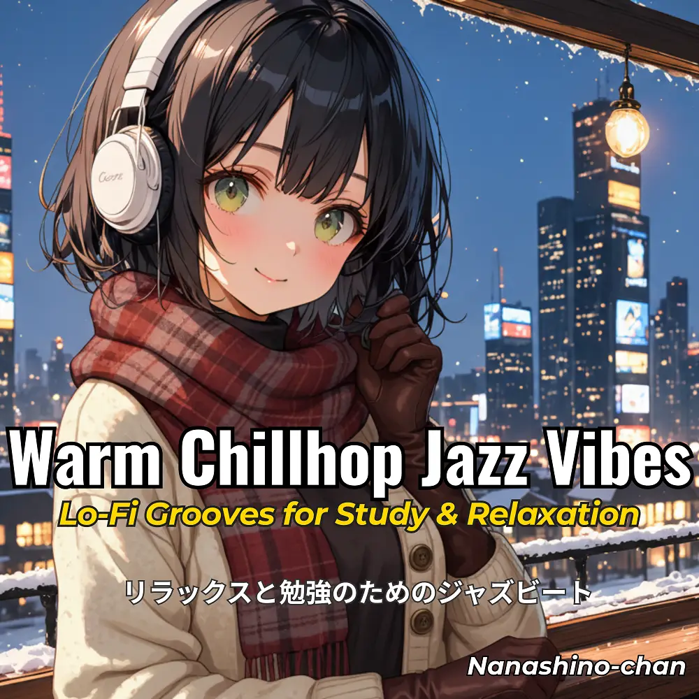

Lo-Fi · Chillhop · Jazz
Warm Chillhop Jazz Vibes: Lo-Fi Grooves for Study & Relaxation
Nanashino-chan
Explore Warm Chillhop Jazz Vibes: Lo-Fi Grooves for Study & Relaxation by Nanashino-chan: 22 instrumental tracks spanning Lo-Fi / Chillhop / Jazz. Start with Chill Beginnings / Mellow Vibes, preview the collection and find your favorites on streaming services.
2025-11-21 · Released · 22 tracks · Instrumental
Preview the album
The jacket stays here until you choose a track. Playback uses YouTube.
YOUTUBE PREVIEW
Choose a track to listen
The jacket stays here until you choose a track. Playback uses YouTube.
If playback is unavailable, open the album or track on the streaming service.
Find this album on streaming services
Links marked “search” open search results. Select the album or track on the service.
Track list 22
- 01Chill Beginnings
- 02Mellow Vibes
- 03Soft Jazz Grooves
- 04Relaxing Piano Rhythms
- 05Cozy Beats
- 06Late Night Reflections
- 07Gentle Jazz Hop
- 08Warm Basslines
- 09Smooth Keys
- 10Winter Chill
- 11Dreamy Lo-Fi Sounds
- 12Subtle Relaxation
- 13Nighttime Flow
- 14Restful Harmony
- 15Soulful Jazz Moments
- 16Deep Relaxation
- 17Cozy Jazzhop
- 18Smooth Transitions
- 19Calm & Unwind
- 20Final Chillout
- 21Outro Relaxation
- 22Peaceful Ending
Find a sound for your next post
Copy “Nanashino-chan + track title” and paste it into your social app’s music search. Availability depends on your region and account. Copying the name does not grant usage rights.